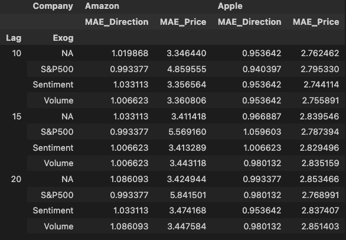

Overview
This project aims to forecast the closing prices and directions of stock movements for AAPL and AMZN. I used AutoRegressive (AR) models with different lags and external variables such as trading volume, sentiment derived from Twitter data, and the S&P 500 index.
Data Collection
- Yahoo Finance: Historical stock data for AAPL and AMZN from 2021-09-30 to 2022-09-30.
- Twitter Data: Collected sentiment data for AAPL and AMZN from tweets using a custom sentiment analysis function.
Models Used
AutoRegressive (AR) Model:
- Price Prediction: Forecasts the stock price at time t using a specified lag.
- Direction Prediction: Predicts the gradient (up or down) of stock price movements using a specified lag.
Each model is tested using the following external variables:
- Volume: Trading volume.
- Sentiment: Twitter sentiment analysis.
- S&P 500 Index: Overall market movement.
Results
The results are summarized in the table below. An interactive plot of the results can be found here.
Visualizations
Candle Charts


Comparative Plots


Conclusion
The project demonstrates how different models and external factors can influence stock price predictions. The AR models with external variables such as trading volume and sentiment provide different levels of accuracy, highlighting the importance of selecting appropriate inputs for financial forecasting.
Project Repository
You can find the full code and data on my GitHub repository.
Contact
For more information or inquiries about this project, please contact
me at:
westling01@gmail.com